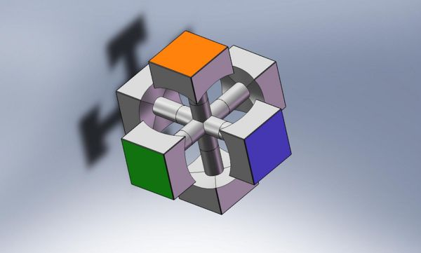

The puzzle initially appears to be made up of a stack of cubes that turn around each other. looking inside, however, 3 essential components make up the cube, none of which are true cubes themselves.
The center piece that holds the puzzle together is called the core. The core keeps the cubes structural integrity while allowing it to rotate. There is a central axis out of which six spokes come from. Each spoke contains a gear and spring to allow rotation. The six spokes each have a different color face attached to the end; this is the only part that one sees when the puzzle is fully intact. Because of this design, the only piece that may never move places on a cube is the center piece. Each side has a separate color in the center, which will be the basis for solving.
The core of the cube allows each face to rotate.
There are 12 edge pieces on the Rubik’s Cube and as the name suggests, they are positioned along the edge of the puzzle. Each edge displays two different colors which indicate what faces they should be joining. Edge pieces, unlike the core do move around, and must be brought back to their correct center colors.
 Edge pieces connect center pieces and move as the cube turns.
Edge pieces connect center pieces and move as the cube turns.
There are 8 corner pieces on the Rubik’s Cube, positioned on the 8 corners of the shape. These pieces have three distinct colors, meaning they connect three different faces. Similar to edge pieces, corners also move around and must be brought back to their original position to solve the cube. It is important to note that a corner piece may not take the place of an edge piece. A corner can only go in a corner slot and an edge in an edge slot.
 Corner pieces are identified by their position and their three colors.
Corner pieces are identified by their position and their three colors.
The key to solving the Rubik’s Cube is understanding how it moves, as this leads to understanding how to manipulate certain pieces. Communities that solve Rubik’s Cubes have an internationally recognized movement notation.
A turn simply means to rotate the specified side clockwise as if it were facing you.

The addition of an apostrophe makes the move prime, meaning to turn counterclockwise.

Note: The addition of 2 into the instruction (EX: U2) means to perform the move twice